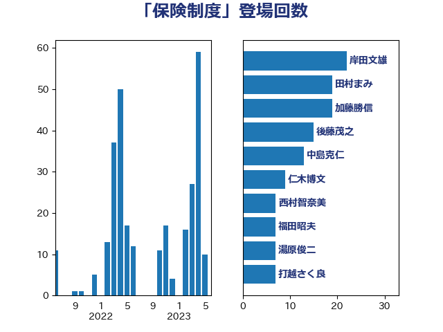

単語「保険制度」

| 岸田文雄 | 自由民主党 | 22 回 |
| 田村まみ | 国民民主党 | 19 回 |
| 加藤勝信 | 自由民主党 | 19 回 |
| 後藤茂之 | 自由民主党 | 15 回 |
| 中島克仁 | 立憲民主党 | 13 回 |
| 仁木博文 | 無所属 | 9 回 |
| 西村智奈美 | 立憲民主党 | 7 回 |
| 福田昭夫 | 立憲民主党 | 7 回 |
| 湯原俊二 | 立憲民主党 | 7 回 |
| 打越さく良 | 立憲民主党 | 7 回 |
| 本田顕子 | 自由民主党 | 6 回 |
| 島村大 | 自由民主党 | 6 回 |
| 萩生田光一 | 自由民主党 | 5 回 |
| 藤木眞也 | 自由民主党 | 4 回 |
| 小寺裕雄 | 自由民主党 | 4 回 |
| 伊佐進一 | 公明党 | 4 回 |
| 高木真理 | 立憲民主党 | 3 回 |
| 高木宏壽 | 自由民主党 | 3 回 |
| 金村龍那 | 日本維新の会 | 3 回 |
| 若林健太 | 自由民主党 | 3 回 |
| 田村憲久 | 自由民主党 | 3 回 |
| 池下卓 | 日本維新の会 | 3 回 |
| 吉川ゆうみ | 自由民主党 | 3 回 |
| 倉林明子 | 日本共産党 | 3 回 |
| 鈴木俊一 | 自由民主党 | 2 回 |
| 野間健 | 立憲民主党 | 2 回 |
| 米山隆一 | 立憲民主党 | 2 回 |
| 小林鷹之 | 自由民主党 | 2 回 |
| 大西健介 | 立憲民主党 | 2 回 |
| 堤かなめ | 立憲民主党 | 2 回 |
| 土田慎 | 自由民主党 | 2 回 |
| 吉田久美子 | 公明党 | 2 回 |
| 古賀篤 | 自由民主党 | 2 回 |
| 音喜多駿 | 日本維新の会 | 1 回 |
| 阿部知子 | 立憲民主党 | 1 回 |
| 阿部司 | 日本維新の会 | 1 回 |
| 野田国義 | 立憲民主党 | 1 回 |
| 野村哲郎 | 自由民主党 | 1 回 |
| 赤羽一嘉 | 公明党 | 1 回 |
| 谷合正明 | 公明党 | 1 回 |
| 若松謙維 | 公明党 | 1 回 |
| 芳賀道也 | 国民民主党 | 1 回 |
| 羽生田俊 | 自由民主党 | 1 回 |
| 笠井亮 | 日本共産党 | 1 回 |
| 窪田哲也 | 公明党 | 1 回 |
| 福島みずほ | 社会民主党 | 1 回 |
| 石原宏高 | 自由民主党 | 1 回 |
| 田中健 | 国民民主党 | 1 回 |
| 片山大介 | 日本維新の会 | 1 回 |
| 浦野靖人 | 日本維新の会 | 1 回 |
| 浅野哲 | 国民民主党 | 1 回 |
| 泉田裕彦 | 自由民主党 | 1 回 |
| 河西宏一 | 公明党 | 1 回 |
| 池田佳隆 | 自由民主党 | 1 回 |
| 柚木道義 | 立憲民主党 | 1 回 |
| 東徹 | 日本維新の会 | 1 回 |
| 斉藤鉄夫 | 公明党 | 1 回 |
| 徳永エリ | 立憲民主党 | 1 回 |
| 川田龍平 | 立憲民主党 | 1 回 |
| 山崎正恭 | 公明党 | 1 回 |
| 小池晃 | 日本共産党 | 1 回 |
| 小山展弘 | 立憲民主党 | 1 回 |
| 室井邦彦 | 日本維新の会 | 1 回 |
| 奥下剛光 | 日本維新の会 | 1 回 |
| 天畠大輔 | れいわ新選組 | 1 回 |
| 塩川鉄也 | 日本共産党 | 1 回 |
| 吉田とも代 | 日本維新の会 | 1 回 |
| 伊藤岳 | 日本共産党 | 1 回 |
| 井坂信彦 | 立憲民主党 | 1 回 |
| 中川貴元 | 自由民主党 | 1 回 |
| 世耕弘成 | 自由民主党 | 1 回 |